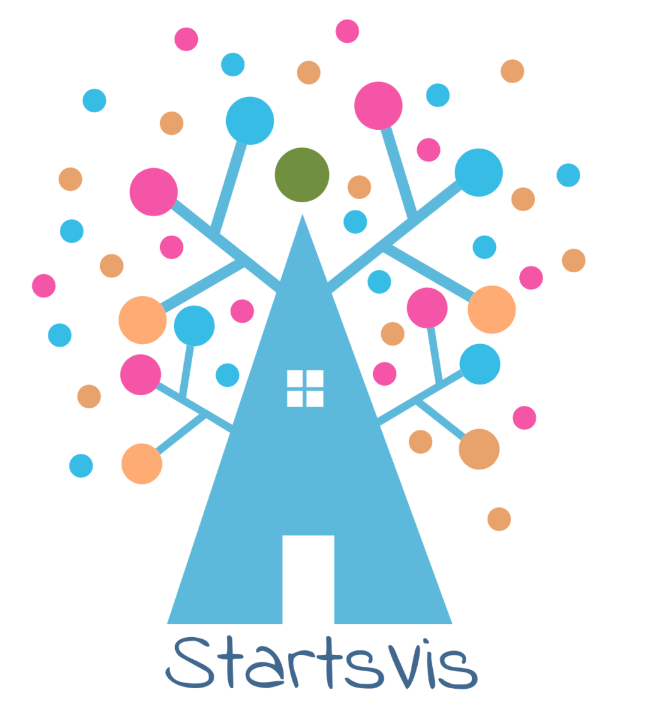

About the project

StartsVIS is a d3-based system for visualizing types dependencies in STARTS.
STARTS (STAtic Regression Test Selection) is a robust tool for performing static RTS.
Demo: Demo address
GitHub: StartsVis-Version2